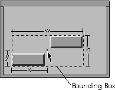

|
The Drag class provides a framework for implementing drag operations in Galaxy applications. A drag operation provides a graphical way to move one or more items from one screen location to another. A drag operation is initiated from a button down, drag, or detail event. The drag operation is completed by either a button up event or an application call to stop the drag. During the drag operation, an application-defined drawing function is repeatedly called to draw the items being dragged across the screen. Upon completion of a drag operation, a notification function is called to denote the window and location of the drop.
Note that the Drag class does not implement an interface to handle a drop operation, but a few suggestions follow. The destination window of a drop can be checked for a good drop site by looking at the window's class and/or its tag name. The type of item being dropped can be determined by either defining a name or constant to be associated with the type of drag.
Key Functionality
To perform a drag operation, create a drag item and determine the bounding box that contains the largest area to be visible during the drag operation. The bounding box is the union of all rectangles representing items contained in the drag.
vdrag *drag = vdragCreate();
vdragSetMaxSize(drag, width, height);
Place the position of the pointer in the bounding box with SetOffset. The x and y coordinates, passed as parameters to this routine, position the pointer relative to the origin of the bounding box (located at the lower left corner of the bounding box). If you do not specify a position for the pointer, it is by default placed at the origin. Figure 27 shows the offset for a bounding box containing two items to be dragged. The pointer is placed in the center of the bounding box.
Figure 27. Bounding box with two items to be dragged

To drag an item with the pointer placed in the center of the bounding box, set x to width/2 and y to height/2.
vdragSetOffset(drag, width/2, height/2);
SetDrawProc sets the drawing function that repeatedly draws the area inside the bounding box during the drag. The drawRect parameter to the drawing function specifies the location for drawing during the drag operation.
void dragDrawProc(vdrag *drag, vrect *drawRect)
{
vimage *image;
image = (vimage *) vdragGetData(drag);
vdrawMoveTo(drawRect->x, drawRect->y);
vdrawImageIdent(image);
}
The notify function for a drag operation is called after a button up event has signalled the end of the drag operation.
void dragNotify(vdrag *drag, vwindow *from,
vwindow *to, vevent *event)
{
vdialog *dialog;
vimage *image;
vdialogItem *item;
/*
* Check to see if drop is in the correct dialog
*/
if (vwindowGetTag(to) ==
vnameInternGlobalLiteral("MyDropDialog"))
{
dialog = (vdialog *) to;
/*
* Check to see if mouse location is in the image item
*/
item = vdialogFindItem(dialog, vname_Image);
if (vdialogItemContainsPoint(item,
veventGetPointerX(event),
veventGetPointerY(event)))
{
image = (vimage *) vdragGetData(drag);
vdialogSetItemImage(item, image);
return;
}
}
/*
* Beep since we did not get a good drop
*/
vwindowBeep();
}
Use SetDetailProc to set the function that is called each time the pointer position changes during the tracking of a drag. The detail notify can be used to provide feedback to the user about a potential drop site. Note that the only feedback possible at this time is to change the cursor. (Drawing operations are not guaranteed to work properly here since offscreen drawing is used to make smooth drags.) Also note that the return value for the detail notify is reserved for future use and is currently ignored. To ensure future compatibility, return the value zero.
int detailNotify(vdrag *drag, vwindow *from,
vwindow *to, vevent *event)
{
vdialog *dialog;
vdialogItem *item;
/*
* Check to see if potential drop is in the correct dialog
*/
if (vwindowGetTag(to) ==
vnameInternGlobalLiteral("MyDropDialog"))
{
dialog = (vdialog *) to;
/*
* Check to see if pointer location is in the image item
*/
item = vdialogFindItem(dialog, vname_Image);
if (vdialogItemContainsPoint(item,
veventGetPointerX(event),
veventGetPointerY(event)))
{
/*
* This is a good drop site
*/
vwindowSetCursor(from, goodDropCursor);
return(0);
}
}
/*
* This is not a good drop site
*/
vwindowSetCursor(from, badDropCursor);
return(0);
}
|